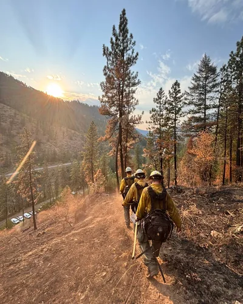

A fire season
Out of the frying pan and onto a fire crew. The job was the same: find the gap and fill it.
Wherever the line was weakest

This past summer, my crew was called to a new fire on a steep, root- and rock-covered hillside in northern Idaho. As we worked to contain it, I noticed people losing steam. I jumped into a quality control role, finishing my section and double-checking others’ work, which kept the crew pushing to finish theirs.
Then, I moved to burning out the strip between our line and the fire, and holding the line at its weakest point, where, if it failed, the fire would jump it. As we worked into the evening, my squad boss would simply move me where work needed to be done and have me figure out what was needed.
That was the job: find the gap and fill it.
49 days on a hand crew
I was on a 20-person Type 2 Initial Attack hand crew, the kind that fights fire mostly with hand tools. We dug hot line, the fireline cut right at the fire’s edge. We also ran hose and mopped up, putting out what still burned after the front passed. We worked with dozer and helicopter crews, and some of the work took us into the wildland-urban interface, where houses meet open land.
We were out on assignment for 49 days in all.
When the plan isn’t clear
Being a hard worker was essential to being a good firefighter. But there was more ambiguity than I expected.
Division, the level above our crew, gave our crew boss an assignment. He delegated to the squad bosses, and the squad bosses tried to figure out how to get it done. That wasn’t always as clear as digging a set amount of line. A variety of small tasks pulled every level of the chain of command in different directions, and it was our job to figure out what the goal was and how we could accomplish it.
Know the why, fill the gaps
We held an after-action review every day. The review asks four questions: what was planned, what happened, why, and what we’d do next time. I took part in them and ran them on occasion.
One of them was about exactly that coordination. We were doing project work. It shouldn’t have been difficult, but it wasn’t clear yet how we should function when there was ambiguity in our roles. Tensions were high. Our overhead, the crew’s leaders, were unsure of who to send where, and people were being given conflicting information. It was chaos.
We discussed it and came back the next day with an understanding. You should know what is being done and why. Then, when the plan and the work don’t match, each crew member can understand their place and fill the gaps as needed.
Obviously that is a lofty goal, but it is one I took to heart.